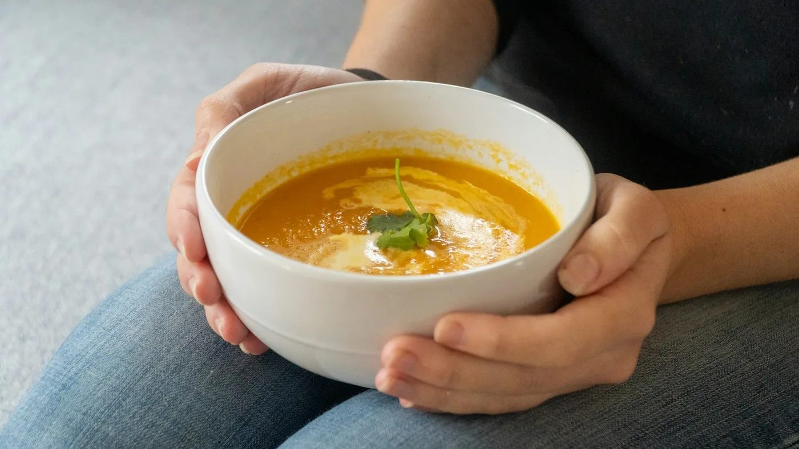
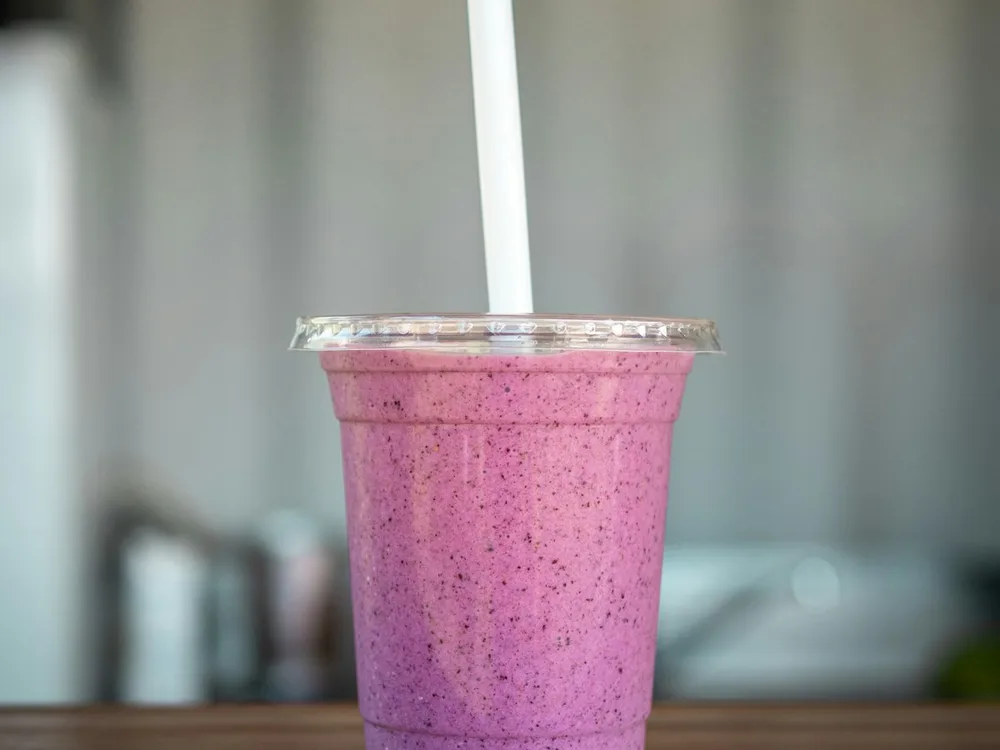
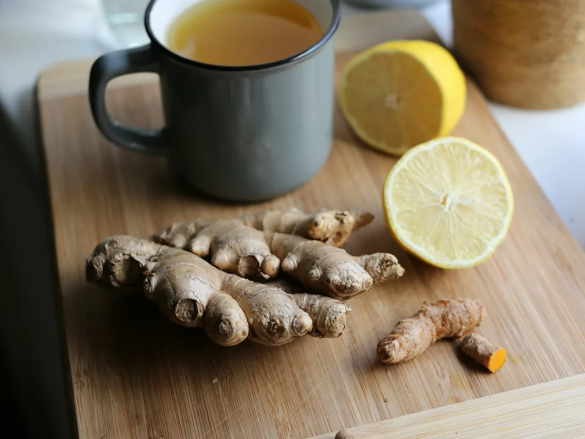

Qué comer durante la quimioterapia: guía práctica

Durante la quimioterapia, comer puede convertirse en un reto. Hay días en los que no apetece nada, otros en los que la comida sabe a metal y otros en los que las náuseas lo complican todo. Y alrededor, muchos consejos bienintencionados que a veces confunden más de lo que ayudan. En esta guía te cuento qué dice la evidencia y te doy ideas prácticas para cada síntoma, para ti y para quien cocina en casa.
Por qué la alimentación importa tanto
La quimioterapia y la propia enfermedad pueden hacer que comas menos y que pierdas peso y, sobre todo, masa muscular. Mantener un buen estado nutricional ayuda a tolerar mejor los tratamientos, a recuperarte antes entre ciclos y a tener más energía en el día a día. Por eso las guías de la Sociedad Europea de Nutrición Clínica y Metabolismo (ESPEN) recomiendan valorar el estado nutricional desde el diagnóstico y repetirlo a lo largo del tratamiento1,2.
La primera herramienta que proponen es el consejo dietético individualizado. En un ensayo clínico con pacientes en radioterapia, quienes recibieron asesoramiento nutricional personalizado comieron mejor, tuvieron menos síntomas y mejor calidad de vida que quienes no lo recibieron3.
Importante: tu equipo de oncología es siempre la referencia. Todo lo que leas aquí son pautas generales; si tienes una indicación concreta de tu oncólogo, esa va primero.
Lo básico: energía y proteína
Durante el tratamiento no es momento de hacer dieta para adelgazar, aunque antes del diagnóstico te lo hubieran recomendado. La prioridad es comer lo suficiente y, en especial, asegurar la proteína, que ayuda a conservar la masa muscular2. Buenas fuentes son el huevo, el pescado, la carne, los lácteos como el yogur o el queso, y las legumbres.
Una idea práctica: intenta que en cada comida y en cada merienda haya algo de proteína. Un yogur, una tortilla francesa, un poco de queso fresco o un hummus suman más de lo que parece.
Si no tienes apetito

- Come poco y a menudo: cinco o seis tomas pequeñas al día se llevan mejor que tres platos grandes.
- Aprovecha los momentos buenos: si por la mañana tienes más hambre, haz ahí la comida más completa.
- Enriquece los platos: un chorrito de aceite de oliva, queso rallado, huevo picado, frutos secos molidos o leche en polvo en cremas y purés aumentan la energía y la proteína sin aumentar la cantidad.
- Bebe entre comidas, no durante: así no te llenas antes de tiempo.
- Prueba texturas fáciles: batidos, cremas, yogures o natillas caseras entran mejor los días difíciles.
Si aun así no llegas a cubrir lo que necesitas, tu equipo puede valorar suplementos nutricionales orales, que son productos específicos y no deben elegirse por tu cuenta2.
Si tienes náuseas

- Toma la medicación contra las náuseas tal y como te la han pautado, sin esperar a encontrarte mal.
- Elige alimentos secos y suaves, como tostadas, picos o galletas tipo María, sobre todo al levantarte.
- Los platos templados o fríos huelen menos que los calientes y suelen tolerarse mejor.
- Evita los fritos, los platos muy grasos y los olores fuertes. Si puedes, que otra persona cocine y ventila la cocina.
- Come despacio y no te tumbes justo después de comer.
- Bebe a sorbos pequeños a lo largo del día: agua, infusiones suaves o caldos.
Si la comida sabe distinta
Los cambios en el gusto y el olfato son muy frecuentes durante la quimioterapia4. Muchas personas notan sabor metálico, que todo sabe soso o que algunos alimentos que les encantaban ahora les resultan desagradables. Algunas ideas:
- Si notas sabor metálico, usa cubiertos de plástico o de madera.
- Si la carne roja te sabe rara, prueba con pollo, pescado, huevo o legumbres.
- Si todo sabe soso, juega con hierbas aromáticas, especias suaves, limón o vinagre, salvo si tienes llagas en la boca.
- Enjuágate la boca antes de comer para «limpiar» el sabor.
- Ten paciencia: estos cambios suelen mejorar cuando termina el tratamiento.
Si tienes la boca seca o llagas
- Elige texturas blandas y jugosas: cremas, purés, guisos con salsa, tortillas jugosas, pescado en papillote o fruta madura.
- Evita lo muy caliente, lo ácido, lo picante y lo crujiente, que irritan.
- Bebe con frecuencia y ten siempre agua a mano. Chupar cubitos de hielo o fruta congelada puede aliviar.
- Cuida la higiene de la boca con un cepillo suave y los enjuagues que te indique tu equipo.
Si tienes diarrea o estreñimiento
Algunos tratamientos aceleran el intestino y otros, junto con los medicamentos para las náuseas o el dolor, lo frenan. Las pautas son casi opuestas, así que conviene saber en qué situación estás.
Si tienes diarrea:
- Bebe más líquido del habitual, a sorbos y a lo largo del día: agua, caldos o bebidas de rehidratación oral si te las recomiendan.
- Elige alimentos de fácil digestión, como arroz, patata cocida, zanahoria, pescado blanco, pollo, huevo, plátano o manzana asada.
- Reduce temporalmente los fritos, la grasa abundante, las verduras crudas y los alimentos muy integrales.
- Si la diarrea es intensa, dura más de un día o tienes fiebre, avisa a tu equipo enseguida.
Si tienes estreñimiento:
- Aumenta poco a poco la fibra con fruta, verdura, legumbres y cereales integrales, si tu equipo no te ha indicado lo contrario.
- Bebe suficiente agua, porque la fibra sin líquido puede empeorarlo.
- Muévete en la medida de lo posible: un paseo corto ya ayuda.
- No tomes laxantes por tu cuenta; pregunta antes cuál te conviene.
Seguridad alimentaria, sin dietas estrictas
Cuando bajan las defensas, es normal preocuparse por las infecciones a través de la comida. Durante años se recomendaron las llamadas dietas neutropénicas, muy restrictivas, pero una revisión de los estudios disponibles no encontró que redujeran las infecciones5. Lo que sí tiene sentido es extremar las medidas de seguridad alimentaria:
- Lavarse bien las manos y lavar frutas y verduras.
- Cocinar bien la carne, el pescado y el huevo, y evitar los alimentos crudos de origen animal, como el sushi, el huevo poco cuajado o la leche sin pasteurizar.
- Separar los alimentos crudos de los cocinados y guardar las sobras en la nevera cuanto antes.
Si tu equipo te ha dado indicaciones más estrictas en algún momento concreto del tratamiento, síguelas.
Cuidado con los suplementos y las dietas «anticáncer»
Como farmacéutica, este es el punto en el que más insisto. Algunos productos naturales pueden interaccionar con la quimioterapia, cambiando su eficacia o su toxicidad: el pomelo, la hierba de San Juan o algunos extractos de plantas son ejemplos conocidos. Tampoco se recomiendan los suplementos de vitaminas o antioxidantes en dosis altas si no hay un déficit demostrado2. Antes de tomar cualquier suplemento, infusión «para las defensas» o producto de herbolario, coméntalo con tu equipo de oncología.
Lo mismo ocurre con las dietas que prometen «matar de hambre al tumor», como el ayuno prolongado, las dietas cetogénicas estrictas o eliminar el azúcar por completo. Las guías desaconsejan las dietas restrictivas sin evidencia, porque pueden empeorar el estado nutricional justo cuando más lo necesitas1,2.
Cómo te ayudo en consulta en Jaén
Como nutricionista en Jaén especializada en nutrición oncológica y farmacéutica, te acompaño antes, durante y después del tratamiento. En consulta, presencial en el centro de Jaén u online, trabajamos así:
- Valoramos tu estado nutricional, tus síntomas y en qué momento del tratamiento estás.
- Adaptamos tu alimentación a cada síntoma, con ideas concretas para los días buenos y para los difíciles.
- Reviso tu medicación y los suplementos que tomas, para evitar interacciones.
- Damos pautas también a quien cocina en casa, que muchas veces es quien más dudas tiene.
Puedes ver cómo trabajo en nutrición oncológica.

Isabel Lara Muñoz es dietista-nutricionista colegiada (CODINAN AND-01693) y farmacéutica por la Universidad de Granada, especializada en patología digestiva y nutrición oncológica. Pasa consulta en Jaén y online.
Referencias
- Arends J, Bachmann P, Baracos V, et al. ESPEN guidelines on nutrition in cancer patients. Clin Nutr. 2017;36(1):11-48. doi:10.1016/j.clnu.2016.07.015
- Muscaritoli M, Arends J, Bachmann P, et al. ESPEN practical guideline: Clinical Nutrition in cancer. Clin Nutr. 2021;40(5):2898-2913. doi:10.1016/j.clnu.2021.02.005
- Ravasco P, Monteiro-Grillo I, Vidal PM, Camilo ME. Dietary counseling improves patient outcomes: a prospective, randomized, controlled trial in colorectal cancer patients undergoing radiotherapy. J Clin Oncol. 2005;23(7):1431-1438. doi:10.1200/JCO.2005.02.054
- Spotten LE, Corish CA, Lorton CM, et al. Subjective and objective taste and smell changes in cancer. Ann Oncol. 2017;28(5):969-984. doi:10.1093/annonc/mdx018
- Sonbol MB, Jain T, Firwana B, et al. Neutropenic diets to prevent cancer infections: updated systematic review and meta-analysis. BMJ Support Palliat Care. 2019;9(4):425-433. doi:10.1136/bmjspcare-2018-001742
Este artículo es divulgativo y no sustituye las indicaciones de tu equipo de oncología ni la valoración individual de un profesional sanitario.